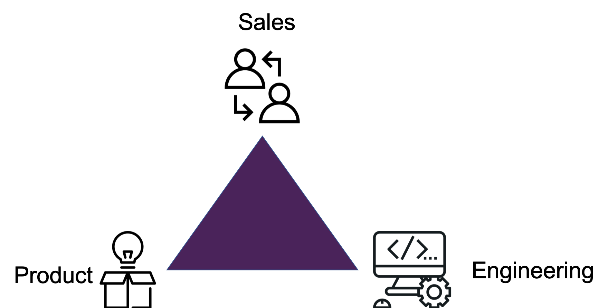

At PlaySay, I created a #1 ranked iPhone App that was acquired by Babbel. At Salesforce, I was the #1 ranked Sales rep. At Flatiron School, I am learning full stack engineering to get the 'tech trifecta' of Product, Sales and Engineering under my belt.
Skills from ongoing education: HTML, Advanced CSS, Advanced Javascript, React, Ruby
At Flatiron School, I am learning full stack engineering to get the 'tech trifecta' of Product, Sales and Engineering under my belt.

This project's purpose was to demonstrate my proficiency by working with a group of students cross-functionally to deliver a minimum viable product (MVP) over the course of the week.
• It was built using user interface, Git, responsive design, pre-processors and javascript fundamentals.
• My role was the User Interface Developer, responsible for the entire website's front end.
Applied Javascript Newspaper Project
This project's purpose was to demonstrate my proficiency by creating an online newspaper.
• It was built using the DOM, the concept of components, HTTP GET requests and the axios library.
• My role was to piece together the online newspaper with everything I had learned to-date.
This project's purpose was to demonstrate my proficiency by creating a Tic Tac Toe game in the Command Line Interface (CLI).
• It was built in a procedural interface using data structures, variables, conditional logic, loops, arrays, iteration and helper methods within the Tic Tac Toe application all coded to the main executable file to run the game in the CLI.
• My role was to build the entire application.
Skills from Salesforce: Involved with the planning, design, development, release and optimization of software development with a majority of the most modern web technologies on Heroku.
► Attained >200% of quota and ranked the #1 sales representative of 3 - 15 person ramped team from 2013 - 2015 (Salesforce's Heroku Division)
👑 #1 ranked rep of the 15 person ramped team Q1 & Q2 of 2015 (210% annualized quota)
👑 #1 ranked rep of the 15 person ramped team of 2014 (287% quota)
🏆 Voted the MVP of 2014 by the 15 person ramped team
👑 #1 ranked rep of the three person ramped team of 2013 (202% quota)
• Attained 210% of annualized quota in 2015, 287% of quota in 2014 and 202% of quota in 2013
• Developed, sold and supported products with cross-functional teams including runtime, routing, API, languages, data services, security, operations, partners, enterprise, marketing and support
• Continually improved sales process through multivariate testing of my gamification techniques that increased customers' probability of implementing my technical optimization advice by 130%.
• Clients included the President's barackobama.com, Facebook's internet.org, BitTorrent's P2P network, Pebble's smartwatch, Snoop Dogg's merryjane.com and Citrix's GoToMeeting
Skills from PlaySay: iOS, Facebook API, Ruby on Rails, MySQL
⭐ "Making learning a language fun" - The Wall Street Journal
⭐ "An educational/business force to be reckoned with" - TechCrunch
⭐ "Enabling a conversational language learning experience" - The New York Times
⭐ "New & Noteworthy" - The Apple App Store
► Generated recurring revenue, increased valuation of the business to $2M then sold to Babbel
• Raised $800K in VC from the most active VC in the Education space of the USA
• Closed enterprise deals with McGraw-Hill, HarperCollins and 30 universities
• Oversaw key vertical analysis and P&L to ultimately increase repeat purchases by 200% YoY
• Captured 18% of target market in Japan via SEO, page optimization and SEM with a 60% ROI
• Directed marketing, advertising, promotion and PR to acquire 100K users
• Launched as TechCrunch Disrupt Finalists with 3K attendees and 250K online viewers (video below)
• Led strategy, product development and launch of a #1 ranked iPhone app in USA & 10 countries